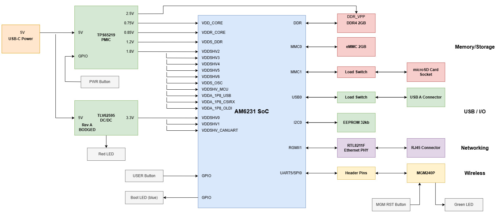
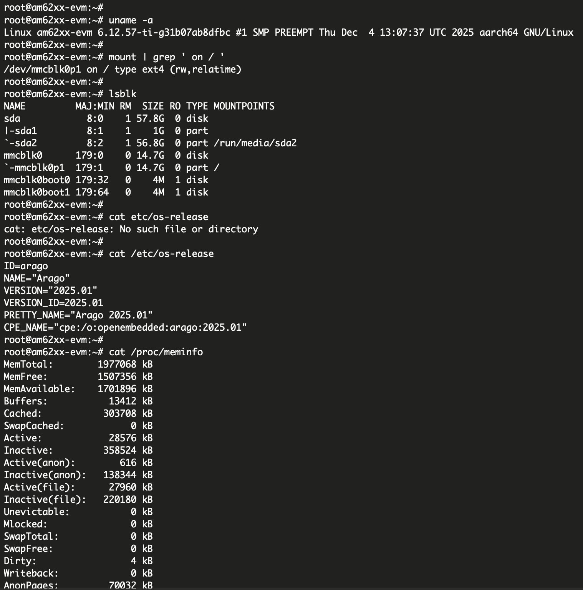
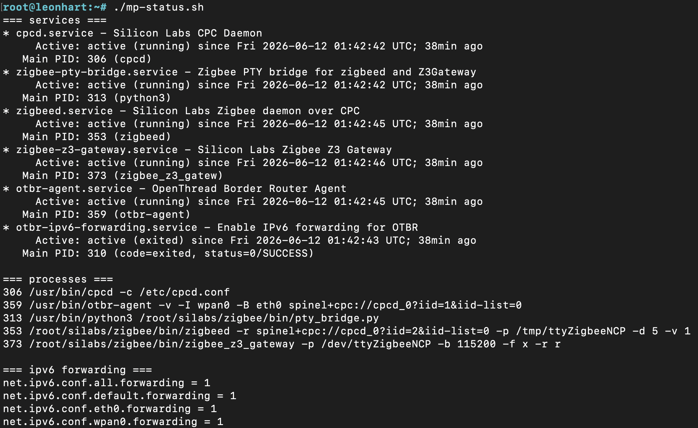
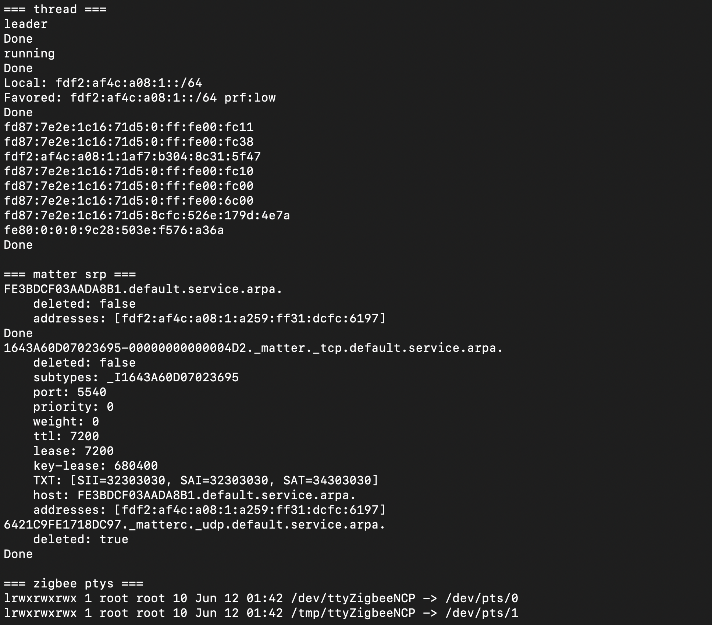
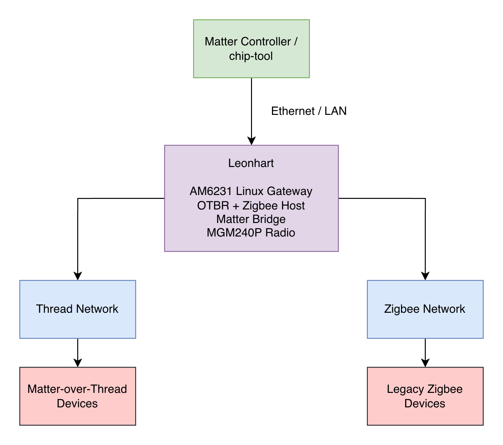

Multi Protocol Smart Home Embedded Linux Gateway - Leonhart

What it does
Leonhart is a custom embedded Linux board capable of hosting local Zigbee and Thread networks, and interacting with smart devices on those networks through Matter commands. This allows for local control of devices, no proprietary walls, and legacy Zigbee devices to remain useful.
What I did
Designed the schematic and PCB from scratch, including DDR4, RGMII Ethernet, power sequencing, eMMC, USB, and radio interfaces.
Rev A successfully booted Linux but exposed power, Ethernet, and radio pinout issues. I debugged those failures and designed Rev B, which boots Linux directly from eMMC with working Gigabit Ethernet, SSH, and MGM240P communication.
Read more
Hardware Design
The board was designed as an 8-layer system around the SoC, with the stackup and placement planned around the high-speed interfaces, power integrity, and BGA breakout. DDR4, eMMC, RGMII Ethernet, USB, and the multiprotocol radio were routed directly on the PCB rather than implemented through external modules.
The power is sourced via USB C, and the TPS65219 PMIC supplies the power rails required by the AM6231 and DDR4 subsystem. A separate switching regulator was also used to offset some of the load off the PMIC. The board contains dedicated interfaced for boot configuration, debug, user control, and radio communication.
Below is a block diagram of the hardware architecture.

Bring-Up & Debugging
Given the scope of the project, I designed Rev A with several bring-up and recovery features so that I could continue testing even if individual subsystems failed. These included USB-A in addition to microSD and eMMC, UART headers for communication with the AM6231 SoC, DNP resistors for configurable bootstrapping, and test points on important signals and power rails.
Before powering on Rev A, I tested rail impedances to make sure there were no shorts. Then I connected the board to a current limited bench PSU, where I discovered a short with the 3.3 V SMPS. The root cause was a flipped footprint that swapped its power and ground pads. After removing the SMPS IC, I powered the board through USB-C and bodged the missing 3.3 V rail through exposed header pins.
Using the SoC UART header, I then observed a continuous stream of C characters generated by the AM6231 boot ROM while waiting for an XMODEM transfer. This was the first confirmation that the SoC was executing code and that the UART interface was functional.
I transferred the three required U-Boot images over UART using TI’s documented serial boot procedure, allowing the system to progress from the ROM bootloader into U-Boot. Once in U-Boot, I verified the operation of HS200 eMMC, performed basic DDR4 read/write testing, and tested the USB interface.
The microSD interface was not functional, so I switched to USB as an alternate boot method. On my Ubuntu development system, I prepared the Linux kernel image, device tree, and root filesystem and successfully booted Linux on the board. I then transferred the Linux files to eMMC so that subsequent boots would not depend on the unstable USB interface. The terminal output below shows Linux running on Rev A along with kernel and memory information.

With Ethernet unavailable, the remaining subsystem I wanted to validate was communication with the multiprotocol radio. I discovered that the onboard radio interface had been wired incorrectly, but a spare UART header allowed me to connect an external SparkFun Thing Plus Matter board containing an MGM240P and verify radio communication independently. Given the temporary power configuration, I chose not to pursue reliable power-on booting on Rev A and instead incorporated the issues discovered during bring-up into Rev B.
Rev B corrected the hardware issues identified on Rev A and supported reliable power-on booting, Ethernet connectivity, and SSH-based development. With a custom device tree containing the board's pin configuration, communication with the onboard MGM240P was also functional. The added Silicon Labs programming connector allowed me to program the radio with the Thread/Zigbee RCP firmware.
During radio bring-up, the module would successfully accept the firmware but produce no outputs. I traced the problem to having accidentally erased the bootloader. After restoring the bootloader and RCP firmware, the radio operated correctly.
Embedded Linux & Smart Home Networking
Rev B corrected the hardware issues identified on Rev A and supported reliable power-on booting, Ethernet connectivity, and SSH-based development. With a custom device tree containing the board's pin configuration, communication with the onboard MGM240P was also functional. The added Silicon Labs programming connector allowed me to program the radio with the Thread/Zigbee RCP firmware.
During Thread integration, I found that the default Linux configuration lacked the multicast routing support required by the border router. I rebuilt and deployed the TI Linux kernel with the necessary networking options enabled.
Once both protocol stacks were operational, I created systemd services for CPCd, the Thread Border Router, and Zigbee gateway components so that the complete wireless stack would start automatically and recover across reboots. The status' of these services can be seen in the image below.


With both Zigbee and Thread networks operational simultaneously, I was able to commission devices onto each network through the onboard MGM240P. For initial Matter-over-Thread testing, I flashed an nRF52840 dongle with a Matter light example and joined it to the Thread network.
On my Ubuntu PC, I set up the Matter development environment and used Matter controller commands to commission and control the Thread device through Leonhart's Thread Border Router. This verified end-to-end communication from the Matter controller, through the IP network and border router, to the Thread endpoint.
To initially control Zigbee devices using Matter commands, I added custom command-handling logic to the Matter Devices.cpp implementation. Matter commands were translated into requests sent to Leonhart, which then mapped each request to the corresponding Zigbee node and command.
The full demo flow diagram can be seen below.

I plan to continue development of Leonhart, improving the Matter bridge functionality, and creating an interface allowing for easier control over the smart home devices.
View project on GitHub →